To find the drain-source resistance (RDS), use
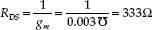
By applying the same formulas as above, you can find that when VGS = +1 V, ID = 15.6 mA, gm = 0.0075 = 7500 μmhos, and RDS = 133 Ω.
FIGURE 4.76
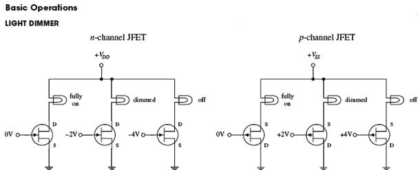
FIGURE 4.77
The two circuits here demonstrate how a JFET acts like a voltage-controlled light dimmer. In the n-channel circuit, a more negative gate voltage causes a larger source-to-drain resistance, hence causing the light bulb to receive less current. In the p-channel circuit, a more positive gate voltage causes a greater drain-to-source resistance.
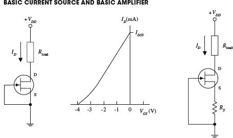
FIGURE 4.78 A simple current source can be constructed by shorting the source and gate terminals together (this is referred to as self-biasing), as shown in the left-most circuit. This means that VGS = VG − VS = 0 V, which means the drain current is simply equal to IDDS. One obvious drawback of this circuit is that the IDDS for a particular JFET is unpredictable (each JFET has its own unique IDDS that is acquired during manufacturing). Also, this source is not adjustable. However, if you place a resistor between the source and ground, as shown in the right-most circuit, you can make the current source adjustable. By increasing RS, you can decrease ID, and vice versa (see Problem 2). Besides being adjustable, this circuit’s ID current will not vary as much as the left circuit for changes in VDS. Though these simple JFET current sources are simple to construct, they are not as stable as a good bipolar or op amp current source.
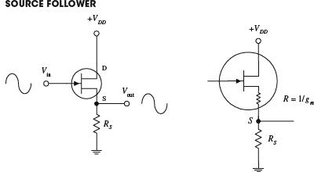
FIGURE 4.79 The JFET circuit here is called a source follower, which is analogous to the bipolar emitter follower; it provides current gain but not voltage gain. The amplitude of the output signal is found by applying Ohm’s law: VS = RSID, where ID = gmVGS = gm(VG − VS). Using these equations, you get
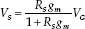
Since VS = Vout and VG = Vin, the gain is simply RSgm/(1 + RGgm). The output impedance, as you saw in Problem 2, is 1/gm. Unlike the emitter follower, the source follower has an extremely larger input impedance and therefore draws practically no input current. However, at the same time, the JFET’s transconductance happens to be smaller than that of a bipolar transistor, meaning the output will be more attenuated. This makes sense if you treat the 1/gm term as being a small internal resistance within the drain-source channel (see rightmost circuit). Also, as the drain current changes due to an applied waveform, gm and therefore the output impedance will vary, resulting in output distortion. Another problem with this follower circuit is that VGS is a poorly controlled parameter (a result of manufacturing), which gives it an unpredictable dc offset.
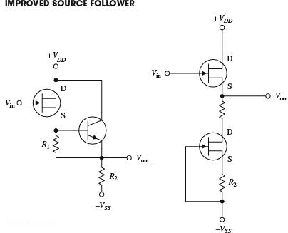
The source follower circuit from the preceding example had poor linearity and an unpredictable dc offset. However, you can eliminate these problems by using one of the two arrangements shown here. In the far-left circuit, you replace the source resistor with a bipolar current source. The bipolar source acts to fix VGS to a constant value, which in turn eliminates the nonlinearities. To set the dc offset, you adjust R1. (R2 acts like RS in the preceding circuit; it sets the gain.) The near-left circuit uses a JFET current source instead of a bipolar source. Unlike the bipolar circuit, this circuit requires no adjusting and has better temperature stability. The two JFETs used here are matched (matched JFETs can be found in pairs, assembled together within a single package). The lower transistor sinks as much current as needed to make VGS = 0 (shorted gate). This means that both JFETs’ VGS values are zero, making the upper transistor a follower with zero dc offset. Also, since the lower JFET responds directly to the upper JFET, any temperature variations will be compensated. When R1 and R2 are set equal, Vout = Vin. The resistors help give the circuit better ID linearity, allow you to set the drain current to some value other than IDSS, and help to improve the linearity. In terms of applications, JFET followers are often used as input stages to amplifiers, test instruments, or other equipment that is connected to sources with high source impedance.
FIGURE 4.80
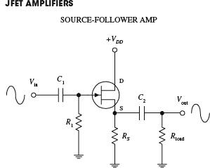
Recall the emitter-follower and common-emitter bipolar transistor amplifiers from the last chapter. These two amplifiers have JFET counterparts, namely, the source-follower and the common-source amplifier shown here. (The source-follower amplifier provides current gain; the common-source amplifier provides voltage gain.) If you were to set up the equations and do the math, you would find that the gain for the amplifiers would be
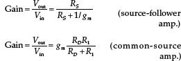
where the transconductance is given by
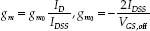
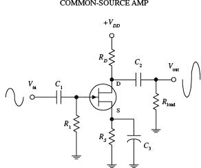
As with bipolar amplifiers, the resistors are used to set the gate voltages and set the quiescent currents, while the capacitors act as ac couplers/high-pass filters. Notice, however, that both JFET amplifiers only require one self-biasing resistor. Now, an important question to ask at this point is, Why would you choose a JFET amplifier over a bipolar amplifier? The answer is that a JFET provides increased input impedance and low input current. However, if extremely high input impedances are not required, it is better to used a simple bipolar amplifier or op amp. In fact, bipolar amplifiers have fewer nonlinearity problems, and they tend to have higher gains when compared with JFET amplifiers. This stems from the fact that a JFET has a lower transconductance than a bipolar transistor for the same current. The difference between a bipolar’s transconductance and JFET’s transconductance may be as large as a factor of 100. In turn, this means that a JFET amplifier will have a significantly smaller gain.
FIGURE 4.81
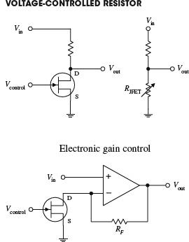
According to the graphs you saw earlier, if VDS drops low enough, the JFET will operate within the linear (ohmic) region. In this region, the ID versus VDS curves follow approximate straight lines for VDS smaller than VGS – VGS,off. This means that the JFET behaves like a voltage-controlled resistor for small signals of either polarity. For example, if you take a voltage-divider network and replace one of the resistors with a JFET, you get a voltage-controlled voltage divider (see upper left-hand figure). The range over which a JFET behaves like a traditional resistor depends on the particular JFET and is roughly proportional to the amount by which the gate voltage exceeds VGS,off. For a JFET to be effective as a linearly responding resistor, it is important to limit VDS to a value that is small compared with VGS,off, and it is important to keep |VGS| below |VGS,off|. JFETs that are used in this manner are frequently used in electronic gain-control circuits, electronic attenuators, electronically variable filters, and oscillator amplitude-control circuits. A simple electronic gain-control circuit is shown here. The voltage gain for this circuit is given by gain = 1 + RF/RDS(on), where RDS is the drain-source channel resistance. If RF = 29 kΩ and RDS(on) = 1 kΩ, the maximum gain will be 30. As VGS approaches VGS,off, RDS will increase and become very large such that RDS >> RF, causing the gain to decrease to a minimum value close to unity. As you can see, the gain for this circuit can be varied over a 30:1 ratio margin.
FIGURE 4.82
Practical Considerations
JFETs typically are grouped into the following categories: small-signal and switching JFETs, high-frequency JFETs, and dual JFETs. Small-signal and switching JFETs are frequently used to couple a high-impedance source with an amplifier or other device such as an oscilloscope. These devices are also used as voltage-controlled switches. High-frequency JFETs are used primarily to amplify high-frequency signals (with the RF range) or are used as high-frequency switches. Dual JFETs contain two matched JFETs in one package. As you saw earlier, dual JFETs can be used to improve source-follower circuit performance.
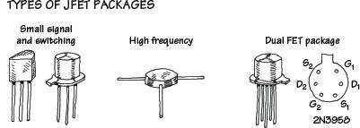
FIGURE 4.83
Like bipolar transistors, JFETs also can be destroyed with excess current and voltage. Make sure that you do not exceed maximum current and breakdown voltages. Table 4.5 is a sample of a JFET specification table designed to give you a feel for what to expect when you start searching for parts.
TABLE 4.5 Portion of a JFET Specification Table
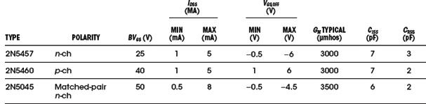
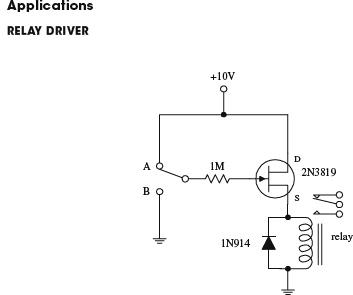
Here, an n-channel JFET is used to switch a relay. When the switch is set to position A, the JFET is on (gate isn’t properly biased for a depletion effect to occur). Current then passes through the JFET’s drain-source region and through the relay’s coil, causing the relay to switch states. When the switch is thrown to position B, a negative voltage—relative to the source—is set at the gate. This in turn causes the JFET to block current flow from reaching the relay’s coil, thus forcing the relay to switch states.
FIGURE 4.84
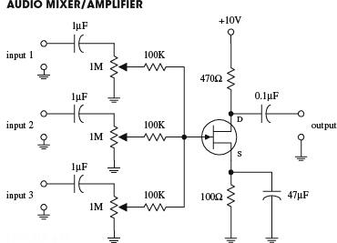
This circuit uses a JFET—set in the common-source arrangement—to combine (mix) signals from a number of different sources, such as microphones, preamplifiers, etc. All inputs are applied through ac coupling capacitors/filters. The source and drain resistors are used to set the overall amplification, while the 1-MΩ potentiometers are used to control the individual gains of the input signals.
FIGURE 4.85
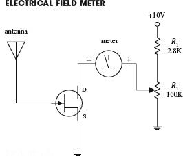
Here, a JFET is used to construct a simple static electricity detector. When the antenna (simple wire) is placed near a charged object, the electrons in the antenna will be draw toward or away from the JFET’s gate, depending on whether the object is positively or negatively charged. The repositioning of the electrons sets up a gate voltage that is proportional to the charge placed on the object. In turn, the JFET will either begin to resist or allow current to flow through its drain-source channel, hence resulting in ammeter needle deflection. R1 is used to protect the ammeter, and R2 is used to calibrate it.
FIGURE 4.86
4.3.4 Metal Oxide Semiconductor Field-Effect Transistors
Metal oxide semiconductor field-effect transistors (MOSFETs) are incredibly popular transistors that in some ways resemble JFETs. For instance, when a small voltage is applied at its gate lead, the current flow through its drain-source channel is altered. However, unlike JFETS, MOSFETs have larger gate lead input impedances (≥1014 Ω, as compared with ∼109 Ω for JFETs), which means that they draw almost no gate current whatsoever. This increased input impedance is made possible by placing a metal oxide insulator between the gate-drain/source channel. There is a price to pay for this increased amount of input impedance, which amounts to a very low gate-to-channel capacitance (a few pF). If too much static electricity builds up on the gate of certain types of MOSFETs during handling, the accumulated charge may break through the gate and destroy the MOSFET. (Some MOSFETs are designed with safeguards against this breakdown—but not all.)
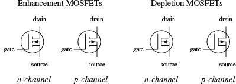
FIGURE 4.87
The two major kinds of MOSFETs include enhancement-type MOSFETs and depletion-type MOSFETs (see Fig. 4.88). A depletion-type MOSFET is normally on (maximum current flows from drain to source) when no difference in voltage exists between the gate and source terminals (VGS = VG − VS = 0 V). However, if a voltage is applied to its gate lead, the drain-source channel becomes more resistive—a behavior similar to a JFET. An enhancement-type MOSFET is normally off (minimum current flows from drain to source) when VGS = 0 V. However, if a voltage is applied to its gate lead, the drain-source channel becomes less resistive.

Both depletion and enhancement MOSFETs use an electrical field—produced by a gate voltage—to alter the flow of charge carriers through the semiconductive drain-source channel. With depletion-type MOSFETs, the drain-source channel is inherently conductive; charge carriers such as electrons (n-channel) or holes (p-channel) are already present within the n-type or p-type channel. If a negative gate-source voltage is applied to an n-channel depletion-type MOSFET, the resulting electrical field acts to “pinch off” the flow of electrons through the channel (see Fig. 4.89a). A p-channel depletion-type MOSFET uses a positive gate-source voltage to “pinch off” the flow of holes through its channel (see Fig. 4.89b). (The pinching-off effect results from depletion regions forming about the upper and lower gate contacts.) Enhancement MOSFETs, unlike depletion MOSFETs, have a normally resistive channel; there are few charge carriers within it. If a positive gate-source voltage is applied to an n-channel enhancement-type MOSFET, electrons within the p-type semiconductor region migrate into the channel and thereby increase the conductance of the channel (see Fig. 4.89c). For a p-channel enhancement MOSFET, a negative gate-source voltage draws holes into the channel to increase the conductivity (see Fig. 4.89d).
FIGURE 4.88
Both enhancement-type and depletion-type MOSFETs come in either n-channel or p-channel forms. For an n-channel depletion-type MOSFET, a negative gate-source voltage (VG < VS) increases the drain-source channel resistance, whereas for a p-channel depletion-type MOSFET, a positive gate-source voltage (VG > VS) increases the channel resistance. For an n-channel enhancement-type MOSFET, a positive gate-source voltage (VG > VS) decreases the drain-source channel resistance, whereas for a p-channel enhancement-type MOSFET, a negative gate-source voltage (VG < VS) decreases the channel resistance.
MOSFETs are perhaps the most popular transistors used today; they draw very little input current, are easy to make (require few ingredients), can be made extremely small, and consume very little power. In terms of applications, MOSFETs are used in ultrahigh input impedance amplifier circuits, voltage-controlled “resistor” circuits, switching circuits, and found with large-scale integrated digital ICs.
Like JFETs, MOSFETs have small transconductance values when compared with bipolar transistors. In terms of amplifier applications, this can lead to decreased gain values. For this reason, you will rarely see MOSFETs in simple amplifier circuits, unless there is a need for ultrahigh input impedance and low input current features.
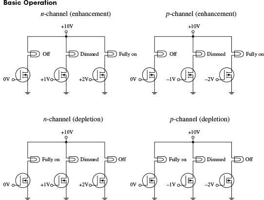
The circuits shown here demonstrate how MOSFETs can be used to control current flow through a light bulb. The desired dimming effects produced by the gate voltages may vary depending on the specific MOSFET you are working with.
FIGURE 4.89
Theory
In terms of theory, you can treat depletion-type MOSFETs like JFETs, except you must give them larger input impedances. The following graphs, definitions, and formulas summarize the theory.
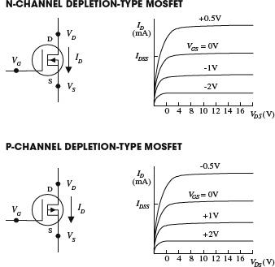
FIGURE 4.90
OHMIC REGION MOSFET is just beginning to resist. In this region, the MOSFET behaves like a resistor.
ACTIVE REGION MOSFET is most strongly influenced by gate-source voltage (VGS) but hardly at all influenced by drain-source voltage (VDS).
CUTOFF VOLTAGE (VGS,OFF) Often referred to as the pinch-off voltage (Vp). Represents the particular gate-source voltage that causes the MOSFET to block most all drain-source current flow.
BREAKDOWN VOLTAGE (BVDS) The drain-source voltage (VDS) that causes current to “break through” MOSFET’s resistive channel.
DRAIN CURRENT FOR ZERO BIAS (IDSS) Represents the drain current when gate-source voltage is zero volts (or when gate is shorted to source).
TRANSCONDUCTANCE (gm) Represents the rate of change in the drain current with change in gate-source voltage when drain-source voltage is fixed for a particular VDS. It is analogous to the transconductance (I/Rtr) for bipolar transistors.
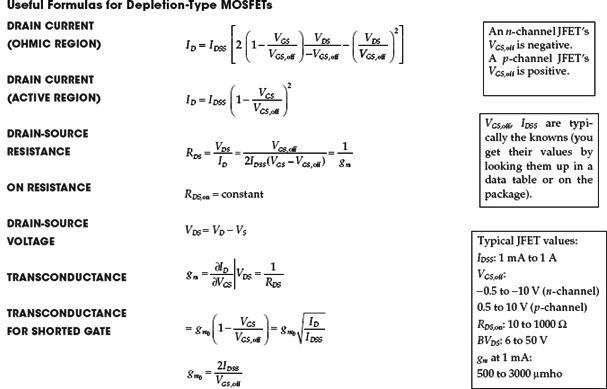
Technical Info and Formulas for Enhancement-Type MOSFETs
Predicting how enhancement-type MOSFETs will behave requires learning some new concepts and formulas. Here’s an overview of the theory.
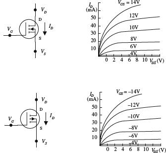
FIGURE 4.91
OHMIC REGION MOSFET is just beginning to conduct. Acts like a variable resistor.
ACTIVE REGION MOSFET is most strongly influenced by gate-source voltage VGS but hardly at all influenced by drain-source voltage VDS.
THRESHOLD VOLTAGE (VGS,th) Particular gate-source voltage where MOSFET is just beginning to conduct.
BREAKDOWN VOLTAGE (BVDS) The voltage across drain source (VDS) that causes current to “break through” MOSFET’s resistance channel.
DRAIN-CURRENT FOR GIVEN BIAS (ID,on) Represents the amount of current ID at a particular VGS, which is given on data sheets, etc.
TRANSCONDUCTANCE (gm) Represents the rate of change in the drain current with the change in gate-source voltage when drain-source voltage is fixed. It is analogous to the transconductance (I/Rtr) for bipolar transistors.
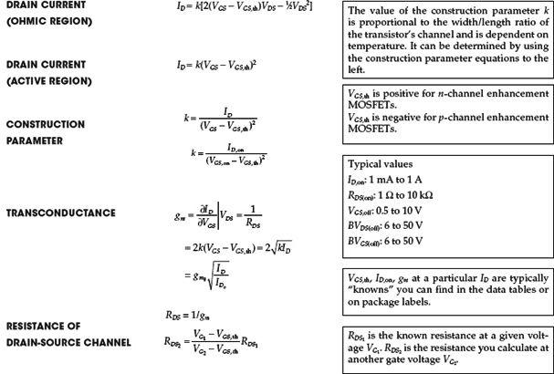
PROBLEM 1
An n-channel depletion-type MOSFET has an IDDS = 10 mA and a VGS,off = −4 V. Find the values of ID, gm, and RDS when VGS = −2 V and when VGS = +1 V. Assume that the MOSFET is in the active region.
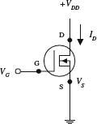
When considering VGS = −2 V, use the following:
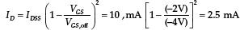
Before you can find gm, you must find gm0—here’s what you use:
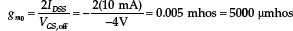
Now you can substitute gm0 into the following expression to find gm:
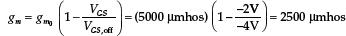
The drain-source resistance is then found by using RDS = 1/gm = 400 Ω. If you do the same calculations for VGS = + 1 V, you get ID = 15.6 mA, gm = 6250 μmhos, and RDS = 160 Ω.
FIGURE 4.92
PROBLEM 2
An n-channel enhancement-type MOSFET has a VGS,th = +2 V and an ID = 12 mA. When VGS = +4 V, find parameters k, gm, and RDS. Assume that the MOSFET is in the active region.
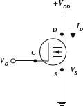
To find k, use the expression for the drain current in the active region: ID = k (VGS − VGS,th)2
Rearranging this equation and plugging in the knowns, you get
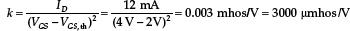
To find gm, use the following:
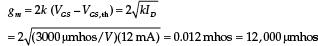
The drain-source resistance is then found by using RDS = 1/gm = 83 Ω.
FIGURE 4.93
PROBLEM 3
In the following n-channel depletion-type MOSFET circuit, IDSS = 10 mA, VGS,off = −4 V, RD = 1 kΩ, and VDD = +20 V, find VD and the gain Vout/Vin.
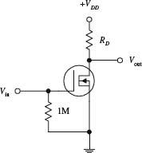
Applying Ohm’s and Kirchhoff’s laws, you can come up with the following expressions:
VDD = VDS + IDRD
VDD = VD + IDRD
where the last expression takes into account the grounded source terminal. (Note the 1-MΩ resistor. It is a self-biasing resistor and is used to compensate leakage currents and other parameters that can lead to MOSFET instability. The voltage drop across this resistor can be neglected because the gate leakage current is very small, typically in the nA or pA range.) Now, if you assume that there is no input voltage, you can say that ID = IDSS. This means that
VD = VDD − IDSSRD
= 20 V − (10 mA)(1 kΩ) = 10 V
To find the gain, use the following formula:
where
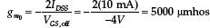
Substituting gm0 back into the gain formula, you get a resulting gain of 5.
FIGURE 4.94
PROBLEM 4
In the following n-channel enhancement-type MOSFET circuit, if k = 1000 μmhos/V, VDD = 20 V, VGS,th = 2 V, and VGS = 5 V, what should the resistance of RD be to center VD to 10 V? Also, what is the gain for this circuit?
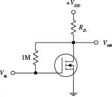
First, determine the drain current:
ID = k (VGS − VGS,th)2
= (1000 μmhos/V)(5 V − 2 V)2 = 9 mA
Next, to determine the size of RD that is needed to set VD to 10 V, use Ohm’s law:
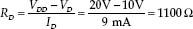
(The 1-MΩ resistor has the same role as the 1-MΩ resistor in the last example.)
To find the gain, first find the transconductance:
gm = 2k (VGS − VGS,th) = 2(1000 μmhos/V)(5 V − 2 V) = 6000 μmhos
Next, substitute gm into the gain expression:
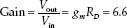
FIGURE 4.95
Important Things to Know about MOSFETs
MOSFETs may come with a fourth lead, called the body terminal. This terminal forms a diode junction with the drain-source channel. It must be held at a nonconducting voltage [say, to the source or to a point in a circuit that is more negative than the source (n-channel devices) or more positive than the source (p-channel devices)]. If the base is taken away from the source (for enhancement-type MOSFETs) and set to a different voltage than that of the source, the effect shifts the threshold voltage VGS,th by an amount equal to ½VBS1/2 in the direction that tends to decrease drain current for a given VGS. Some instances when shifting the threshold voltage becomes important are when leakage effects, capacitance effects, and signal polarities must be counterbalanced. The body terminal of a MOSFET is often used to determine the operating point of a MOSFET by applying an incremental ac signal to its gate.
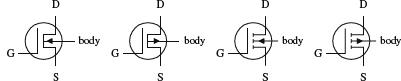
FIGURE 4.96
Damaging a MOSFET Is Easy
MOSFETs are extremely fragile. Their delicate gate-channel oxide insulators are subject to electron bombardment from statically charged objects. For example, it is possible for you to blow a hole through one of these insulators simply by walking across a carpet and then touching the gate of the MOSFET. The charge you pick up during your walk may be large enough to set yourself at a potential of a few thousand volts. Although the amount of current discharged during an interaction is not incredibly large, it does not matter; the oxide insulator is so thin (the gate-channel capacitance is so small, typically a few pF) that a small current can be fatal to a MOSFET. When installing MOSFETs, it is essential to eliminate all static electricity from your work area. In Chap. 7 you’ll find guidelines for working with components subject to electrostatic discharge.
Kinds of MOSFETs
Like the other transistors, MOSFETs come in either metal can-like containers or plastic packages. High-power MOSFETs come with metal tabs that can be fastened to heat sinks. High/low MOSFET driver ICs also are available. These drivers (typically DIP in form) come with a number of independent MOSFETs built in and operate with logic signals.
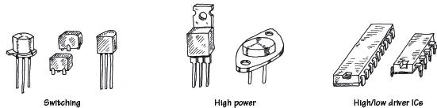
FIGURE 4.97
Things to consider when purchasing a MOSFET include breakdown voltages, ID,max, RDS(on),max, power dissipation, switching speed, and electrostatic discharge protection.
Applications
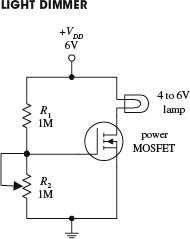
Here, an n-channel enhancement-type power MOSFET is used to control the current flow through a lamp. The voltage-divider resistor R2 sets the gate voltage, which in turn sets the drain current through the lamp.
FIGURE 4.98
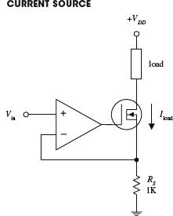
In the circuit shown here, an op amp is combined with an n-channel depletion-type MOSFET to make a highly reliable current source (less than 1 percent error). The MOSFET passes the load current, while the inverting input of the op amp samples the voltage across RS and then compares it with the voltage applied to the noninverting input. If the drain current attempts to increase or decrease, the op amp will respond by decreasing or increasing its output, hence altering the MOSFETs gate voltage in the process. This in turn controls the load current. This op amp/MOSFET current source is more reliable than a simple bipolar transistor-driven source. The amount of leakage current is extremely small. The load current for this circuit is determined by applying Ohm’s law (and applying the rules for op amps discussed in Chap. 8):
Iload = Vin/RS
FIGURE 4.99
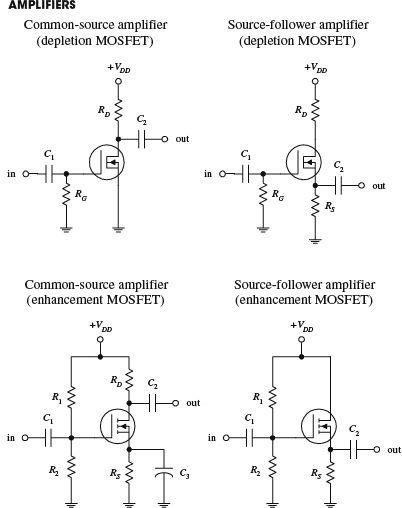
FIGURE 4.100
Common-source and source-follower amplifiers can be constructed using both depletion- and enhancement-type MOSFETs. The depletion-type amplifiers are similar to the JFET amplifiers discussed earlier, except that they have higher input impedances. The enhancement-type MOSFET amplifiers essentially perform the same operations as the depletion-type MOSFET amplifiers, but they require a voltage divider (as compared with a single resistor) to set the quiescent gate voltage. Also, the output for the enhancement-type common-source MOSFET amplifier is inverted. The role of the resistors and capacitors within these circuits can be better understood by referring to the amplifier circuits discussed earlier.
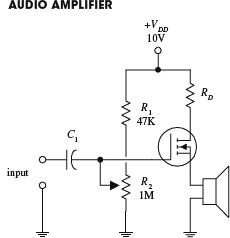
In this circuit, an n-channel enhancement-type MOSFET is used to amplify an audio signal generated by a high-impedance microphone and then uses the amplified signal to drive a speaker. C1 acts as an ac coupling capacitor, and the R2 voltage divider resistor acts to control the gain (the volume).
FIGURE 4.101
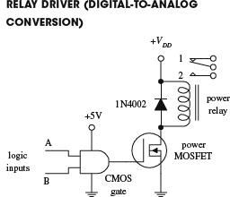
The circuit shown here uses an n-channel depletion-type MOSFET as an interface between a logic circuit and an analog circuit. In this example, an AND gate is used to drive a MOSFET into conduction, which in turn activates the relay. If inputs A and B are both high, the relay is switched to position 2. Any other combination (high/low, low/high, low/low) will put the relay into position 1. The MOSFET is a good choice to use as a digital-to-analog interface; its extremely high input resistance and low input current make it a good choice for powering high-voltage or high-current analog circuits without worrying about drawing current from the driving logic.
FIGURE 4.102
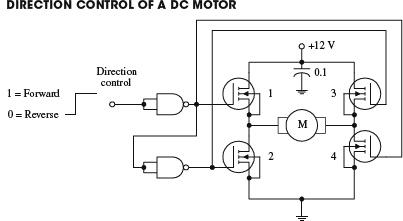
Logic input signals applied to this circuit act to control the direction of rotation of a dc motor. When the input is set high, the upper NAND gate outputs a low in response, turning transistors 1 and 4 on. At the same time, the high output from this gate is sent to the input of the lower NAND gate. The lower gate responded by outputting a low, thereby turning off transistors 2 and 3. Now, the only direction in which current can flow through the circuit is from the power supply through transistor 1, through the motor, and through transistor 4 to ground. This in turn causes the motor to turn in one direction. However, if you now apply a low to the input, transistors 2 and 3 turn on, while transistors 4 and 1 remain off. This causes current to flow through the motor in the opposite direction, thereby reversing the motor’s direction of rotation.
FIGURE 4.103
4.3.5 Unijunction Transistors
Unijunction transistors (UJTs) are three-lead devices that act exclusively as electrically controlled switches (they are not used as amplifier controls). The basic operation of a UJT is relatively simple. When no potential difference exists between its emitter and either of its base leads (B1 or B2), only a very small current flows from B2 to B1. However, if a sufficiently large positive trigger voltage—relative to its base leads—is applied to the emitter, a larger current flows from the emitter and combines with the small B2-to-B1 current, thus giving rise to a larger B1 output current. Unlike the other transistors covered earlier—where the control leads (e.g., emitter, gate) provided little or no additional current—the UJT is just the opposite; its emitter current is the primary source of additional current.
A simple model of a UJT is shown in Fig. 4.104. It consists of a single bar of n-type semiconductor material with a p-type semiconductor “bump” in the middle. One end of the bar makes up the base 1 terminals, the other end the base 2 terminal, and the “bump” represents the emitter terminal. Below is a simple “how it works” explanation.
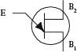
FIGURE 4.104
With no voltage applied to the emitter, only a relatively small number of electrons makes it through the n-region between base 1 and base 2. Normally, both connectors to bases 1 and 2 are resistive (each around a few thousand ohms).
When a sufficiently large voltage is applied to the emitter, the emitter-channel p-n junction is forward-biased (similar to forward-biasing a diode). This in turn allows a large number of base 1 electrons to exit through the emitter. Now, since conventional currents are defined to be flowing in the opposite direction of electron flow, you would say that a positive current flows from the emitter and combines with channel current to produce a larger base 1 output current.
FIGURE 4.105
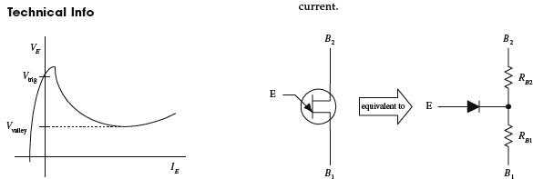
Figure 4.106 shows a typical VE versus IE graph of an UJT, as well as a UJT equivalent circuit. In terms of the UJT theory, if B1 is grounded, a voltage applied to the emitter will have no effect (does not increase conductance from one base to another) until it exceeds a critical voltage, known as the triggering voltage. The triggering voltage is given by the following expression:
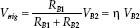
FIGURE 4.106
In this equation, RB1 and RB2 represent the inherent resistance within the region between each base terminal and the n-channel. When the emitter is open-circuited, the combined channel resistance is typically around a few thousand ohms, where RB1 is somewhat larger than RB2. Once the trigger voltage is reached, the p-n junction is forward-biased (the diode in the equivalent circuit begins to conduct), and current then flows from the emitter into the channel. But how do we determine RB1 and RB2? Will the manufacturers give you these resistances? They most likely will not. Instead, they typically give you a parameter called the intrinsic standoff ratio η. This intrinsic standoff ratio is equal to the RB1/(RB1 + RB2) term in the preceding expression, provided the emitter is not conducting. The value of η is between 0 to 1, but typically it hangs out at a value around 0.5.
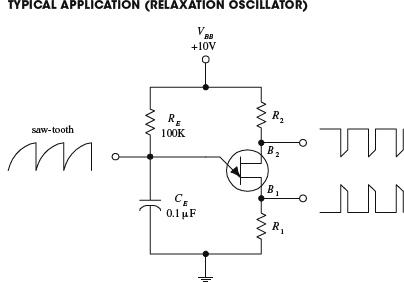
Most frequently, UJTs are used in oscillator circuits. Here, a UJT, along with some resistors and a capacitor, makes up a relaxation oscillator that is capable of generating three different output waveforms. During operation, at one instant in time, CE charges through RE until the voltage present on the emitter reaches the triggering voltage. Once the triggering voltage is exceeded, the E-to-B1 conductivity increases sharply, which allows current to pass from the capacitor-emitter region, through the emitter-base 1 region, and then to ground. CE suddenly loses its charges, and the emitter voltage suddenly falls below the triggering voltage. The cycle then repeats itself. The resulting wave-forms generated during this process are shown in the figure. The frequency of oscillation is determined by the RC charge-discharge period and is given by
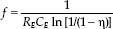
For example, if RE = 100 kΩ, CE = 0.1 μF, and η = 0.61, then f = 106 Hz.
FIGURE 4.107
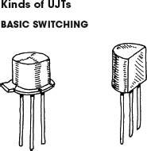
These UJTs are used in oscillatory, timing, and level-detecting circuits. Typical maximum ratings include 50 mA for IE, 35 to 55 V for the interbase voltage (VBB), and 300 to 500 mW for power dissipation.
FIGURE 4.108
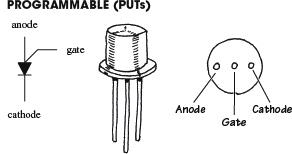
A PUT is similar to a UJT, except that RBB, IV (valley current level), IP (peak current level), and η (intrinsic standoff ratio) can be programmed by means of an external voltage divider. Being able to alter these parameters is often essential in order to eliminate circuit instability. The electronic symbol for a PUT looks radically different when compared with a UJT (see figure). The lead names are also different; there is a gate lead, a cathode lead, and an anode lead. PUTs are used to construct timer circuits, high-gain phase-control circuits, and oscillator circuits. I have included a simple PUT application in the applications section that follows.
FIGURE 4.109
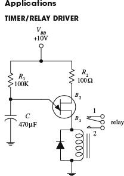
The circuit here causes a relay to throw its switch from one position to another in a repetitive manner. The positive supply voltage charges up the capacitor. When the voltage across the capacitor reaches the UJT’s triggering voltage, the UJT goes into conduction. This causes the relay to throw its switch to position 2. When the capacitor’s charge runs out, the voltage falls below the triggering voltage, and the UJT turns off. The relay then switches to position 1. R1 controls the charging rate of the capacitor, and the size of the capacitor determines the amount of voltage used to trigger the UJT. C also determines the charge rate.
FIGURE 4.110
FIGURE 4.111 Here, a UJT is combined with a few resistors, a bipolar transistor, and a capacitor to make an oscillatory sawtooth generator that has controlled amplification (set by the bipolar transistor). Like the preceding oscillators, C1 and R3 set the frequency. The bipolar transistor samples the voltage on the capacitor and outputs a ramp or sawtooth waveform.
FIGURE 4.112
CALCULATIONS
PUT begins to conduct when
VA = VS + 0.7 V
where VS is set by the voltage divider:
When VA is reached, the anode current becomes:
Here, a PUT is programmed by R1 and R2 to set the desired triggering voltage and anode current. These two resistors form a voltage divider that sets the gate voltage VG (terminal used to turn PUT on or off). For a PUT to conduct, the anode voltage must exceed the gate voltage by at least 0.7 V. At a moment when the capacitor is discharged, the gate is reverse-biased, and the PUT is turned off. Over time, the capacitor begins charging through R4, and when enough charge is collected, a large enough voltage will be present to forward-bias the gate. This then turns the PUT on (i.e., if the anode current IA exceeds the peak current IP). Next, the capacitor discharges through the PUT and through R3. (Note: When a PUT is conducting, the voltage from the anode to the cathode is about 1 V.) As the capacitor reaches full discharge, the anode current decreases and finally stops when the gate no longer has a sufficient voltage applied to it. After that, the charging begins again, and the cycle repeats itself, over and over again. By taping the circuit at the gate and source terminals, you can output both a spiked and sawtooth wave pattern.
4.4 Thyristors
4.4.1 Introduction
Thyristors are two- to four-lead semiconductor devices that act exclusively as switches—they are not used to amplify signals, like transistors. A three-lead thyristor uses a small current/voltage applied to one of its leads to control a much larger current flow through its other two leads. A two-lead thyristor, on the other hand, does not use a control lead but instead is designed to switch on when the voltage across its leads reaches a specific level, known as the breakdown voltage. Below this breakdown voltage, the two-lead thyristor remains off.
You may be wondering at this point, Why not simply use a transistor instead of a thyristor for switching applications? Well, you could—often transistors are indeed used as switches—but compared with thyristors, they are trickier to use because they require exacting control currents/voltages to operate properly. If the control current/voltage is not exact, the transistor may lay in between on and off states. And according to common sense, a switch that lies in between states is not a good switch. Thyristors, on the other hand, are not designed to operate in between states. For these devices, it is all or nothing—they are either on or off.
In terms of applications, thyristors are used in speed-control circuits, power-switching circuits, relay-replacement circuits, low-cost timer circuits, oscillator circuits, level-detector circuits, phase-control circuits, inverter circuits, chopper circuits, logic circuits, light-dimming circuits, motor speed-control circuits, etc.
Table 4.6 provides an overview of the major kinds of thyristors. When you see the phrase turns it on, this means a conductive path is made between the two conducting leads [e.g., anode (A) to cathode (C), MT1 to MT2). Normally off refers to the condition when no voltage is applied to the gate (the gate is open-circuited). I will present a closer look at these thyristors in the subsections that follow.
TABLE 4.6 Major Kinds of Thyristors
4.4.2 Silicon-Controlled Rectifiers
SCRs are three-lead semiconductor devices that act as electrically controlled switches. When a specific positive trigger voltage/current is applied to the SCR’s gate lead (G), a conductive channel forms between the anode (A) and the cathode (C) leads. Current flows in only one direction through the SCR, from anode to cathode (like a diode).
FIGURE 4.113
Another unique feature of an SCR, besides its current-controlled switching, has to do with its conduction state after the gate current is removed. After an SCR is triggered into conduction, removing the gate current has no effect. That is, the SCR will remain on even when the gate current/voltage is removed. The only way to turn the device off is to remove the anode-to-cathode current or to reverse the anode and cathodes polarities.
In terms of applications, SCRs are used in switching circuits, phase-control circuits, inverting circuits, clipper circuits, and relay-control circuits, to name a few.
How SCRs Work
An SCR is essentially just an npn and a pnp bipolar transistor sandwiched together, as shown in Fig. 4.114. The bipolar transistor equivalent circuit works well in describing how the SCR works.
THE SCR IS OFF
Using the bipolar equivalent circuit, if the gate is not set to a specific positive voltage needed to turn the npn transistor on, the pnp transistor will not be able to “sink” current from its own base. This means that neither transistor will conduct, and hence current will not flow from anode to cathode.
THE SCR IS ON
If a positive voltage is applied to the gate, the npn transistor’s base is properly biased, and it turns on. Once on, the pnp transistor’s base can now “sink” current though the npn transistor’s collector—which is what a pnp transistor needs in order to turn on. Since both transistors are on, current flows freely between anode and cathode. Notice that the SCR will remain on even after the gate current is removed. This—according to the bipolar equivalent circuit—results from the fact that both transistors are in a state of conduction when the gate current is removed. Because current is already in motion through the pnp transistors base, there is no reason for the transistors to turn off.
FIGURE 4.114
Here, an SCR is used to construct a simple latching circuit. S1 is a momentary contact, normally open pushbutton switch, while S2 is a momentary contact, normally closed pushbutton switch. When S1 is pushed in and released, a small pulse of current enters the gate of the SCR, thus turning it on. Current will then flow through the load. The load will continue to receive current until the moment S2 is pushed, at which time the SCR turns off. The gate resistor acts to set the SCR’s triggering voltage/current. We’ll take a closer look at the triggering specifications in a second.
FIGURE 4.115
FIGURE 4.116 Here, an SCR is used to rectify a sinusoidal signal that is to be used to power a load. When a sinusoidal waveform is applied to the gate, the SCR turns on when the anode and gate receive the positive going portion of the waveform (provided the triggering voltage is exceeded). Once the SCR is on, the waveform passes through the anode and cathode, powering the load in the process. During the negative going portion of the waveform, the SCR acts like a reverse-biased diode; the SCR turns off. Increasing R1 has the effect of lowering the current/voltage supplied to the SCR’s gate. This in turn causes a lag in anode-to-cathode conduction time. As a result, the fraction of the cycle over which the device conducts can be controlled (see graph), which means that the average power dissipated by Rload can be adjusted. The advantage of using an SCR over a simple series variable resistor to control current flow is that essentially no power is lost to resistive heating.
An SCR along with a few resistors, a capacitor, and a UJT can be connected together to make a variable-speed control circuit used to run a dc motor. The UJT, the capacitor, and the resistors make up an oscillator that supplies an ac voltage to the SCR’s gate. When the voltage at the gate exceeds the SCR’s triggering voltage, the SCR turns on, thus allowing current to flow through the motor. Changing the resistance of R1 changes the frequency of the oscillator and hence determines the number of times the SCR’s gate is triggered over time, which in turn controls the speed of the motor. (The motor appears to turn continuously, even though it is receiving a series of on/off pulses. The number of on cycles averaged over time determines the speed of the motor.) Using such a circuit over a simple series variable resistor to control the speed of the motor wastes less energy.
FIGURE 4.117
Kinds of SCRs
Some SCRs are designed specifically for phase-control applications, while others are designed for high-speed switching applications. Perhaps the most distinguishing feature of SCRs is the amount of current they can handle. Low-current SCRs typically come with maximum current/voltage ratings approximately no bigger than 1 A/100 V. Medium-current SCRs, on the other hand, come with maximum current/voltage ratings typically no bigger than 10 A/100 V. The maximum ratings for high-current SCRs may be several thousand amps at several thousand volts. Low-current SCRs come in plastic or metal can-like packages, while medium and high-current SCRs come with heat sinks built in.
FIGURE 4.118
Here are some common terms used by the manufacturers to describe their SCRs:
| VT |
On state-voltage. The anode-to-cathode voltage present when the SCR is on. |
| IGT |
Gate trigger current. The minimum gate current needed to switch the SCR on. |
| VGT |
Gate trigger voltage. The minimum gate voltage required to trigger the gate trigger current. |
| IH |
Holding current. The minimum current through the anode-to-cathode terminal required to maintain the SCR’s on state. |
| PGM |
Peak gate power dissipation. The maximum power that may be dissipated between the gate and the cathode region. |
| VDRM |
Repetitive peak off-state voltage. The maximum instantaneous value of the off-state voltage that occurs across an SCR, including all repetitive transient voltages but excluding all nonrepetitive transient voltages. |
| IDRM |
Repetitive peak off-state current. The maximum instantaneous value of the off-state current that results from the application of repetitive peak off-state voltage. |
| VRMM |
Repetitive peak reverse voltage. The maximum instantaneous value of the reverse voltage that occurs across an SCR, including all repetitive transient voltages but excluding all nonrepetitive transient voltages. |
| IRMM |
Repetitive peak reverse current. Maximum instantaneous value of the reverse current that results from the application of repetitive peak reverse voltage. |
Here’s a sample section of an SCR specifications table to give you an idea of what to expect (Table 4.7).
TABLE 4.7 Sample Section of an SCR Specifications Table
4.4.3 Silicon-Controlled Switches
A silicon-controlled switch (SCS) is a device similar to an SCR, but it is designed to turn off when a positive voltage/input current pulse is applied to an additional anode gate lead. The device also can be triggered into conduction by applying a negative voltage/output current pulse to the same lead. Other than this, the SCS behaves just like an SCR (see last section for the details). Figure 4.119 shows the symbol for an SCS. Note that the lead names may not appear as cathode, gate, and anode gate. Instead, they may be referred to as emitter (cathode), base (gate), and collector (anode gate).
FIGURE 4.119
SCSs are used in counters, lamp drivers, power-switching circuits, and logic circuits, as well as in essentially any circuit that requires a switch that can be turned on and off by two separate control pulses.
How an SCS Works
Figure 4.120 shows a basic n-type/p-type silicon model of an SCS, along with its bipolar equivalent circuit. As you can see, the equivalent circuit looks a lot like the SCR equivalent circuit, with the exception of the anode gate connection. When a positive pulse of current is applied to the gate, the npn transistor turns on. This allows current to exit the pnp transistor’s base, hence turning the pnp transistor on. Now that both transistors are on, current can flow from anode to cathode—the SCS is turned on. The SCS will remain on until you remove the anode-to-cathode current, reverse the anode and cathode polarities, or apply a negative voltage to the anode gate. The negative anode gate voltage removes the transistor’s self-sustaining biasing current.
FIGURE 4.120
Specifications
When buying an SCS, make sure to select a device that has the proper breakdown voltage, current, and power-dissipation ratings. A typical specification table will provide the following ratings: BVCB, BVEB, BVCE, IE, IC, IH (holding current), and PD (power dissipation). Here I have assumed the alternate lead name designations.
4.4.4 Triacs
Triacs are devices similar to SCRs—they act as electrically controlled switches—but unlike SCRs, they are designed to pass current in both directions, therefore making them suitable for ac applications. Triacs come with three leads, a gate lead and two conducting leads called MT1 and MT2. When no current/voltage is applied to the gate, the triac remains off. However, if a specific trigger voltage is applied to the gate, the device turns on. To turn the triac off, the gate current/voltage is removed.
FIGURE 4.121
Triacs are used in ac motor control circuits, light-dimming circuits, phase-control circuits, and other ac power-switching circuits. They are often used as substitutes for mechanical relays.
How a Triac Works
Figure 4.122 shows a simple n-type/p-type silicon model of a triac. This device resembles two SCRs placed in reverse parallel with each other. The equivalent circuit describes how the triac works.
FIGURE 4.122
TRIAC IS OFF
Using the SCR equivalent circuit, when no current/voltage is applied to the gate lead, neither of the SCRs’ gates receives a triggering voltage; hence current cannot flow in either direction through MT1 and MT2.
TRIAC IS ON
When a specific positive triggering current/voltage is applied to the gate, both SCRs receive sufficient voltage to trigger on. Once both SCRs are on, current can flow in either direction through MT1 to MT2 or from MT2 to MT1. If the gate voltage is removed, both SCRs will turn off when the ac waveform applied across MT1 and MT2 crosses zero volts.
Here is a simple circuit showing how a triac acts to permit or prevent current from reaching a load. When the mechanical switch is open, no current enters the triac’s gate; the triac remains off, and no current passes through the load. When the switch is closed, a small current slips through RG, triggering the triac into conduction (provided the gate current and voltage exceed the triggering requirements of the triac). The alternating current can now flow through the triac and power the load. If the switch is open again, the triac turns off, and current is prevented from flowing through the load.
FIGURE 4.123
FIGURE 4.124 A triac along with a variable resistor and a capacitor can be used to construct an adjustable full-wave rectifier. The resistance R of the variable resistor sets the time at which the triac will trigger on. Increasing R causes the triac to trigger at a later time and therefore results in a larger amount of clipping (see graph). The size of C also determines the amount of clipping that will take place. (The capacitor acts to store charge until the voltage across its terminals reaches the triac’s triggering voltage. At that time, the capacitor will dump its charge.) The reason why the capacitor can introduce additional clipping results from the fact that the capacitor may cause the voltage at the gate to lag the MT2-to-MT1 voltage (e.g., even if the gate receives sufficient triggering voltage, the MT2-to-MT1 voltage may be crossing zero volts). Overall, more clipping results in less power supplied to the load. Using this circuit over a simple series variable resistor connected to a load saves power. A simple series variable resistor gobbles up energy. This circuit, however, supplies energy-efficient pulses of current.
This circuit is used in many household dimmer switches. The diac—described in the next section—acts to ensure accurate triac triggering. (The diac acts as a switch that passes current when the voltage across its leads reaches a set breakdown value. Once the breakdown voltage is reached, the diac release a pulse of current.) In this circuit, at one moment the diac is off. However, when enough current passes through the resistors and charges up the capacitor to a voltage that exceeds the diac’s triggering voltage, the diac suddenly passes all the capacitor’s charge into the triac’s gate. This in turn causes the triac to turn on and thus turns the lamp on. After the capacitor is discharged to a voltage below the breakdown voltage of the diac, the diac turns off, the triac turns off, and the lamp turns off. Then the cycle repeats itself, over and over again. Now, it appears that the lamp is on (or dimmed to some degree) because the on/off cycles are occurring very quickly. The lamp’s brightness is controlled by R2.
FIGURE 4.125
This circuit has the same basic structure as the light dimmer circuit, with the exception of the transient suppressor section (R2C2). The speed of the motor is adjusted by varying R1.
FIGURE 4.126
Triacs come in low-current and medium-current forms. Low-current triacs typically come with maximum current/voltage ratings no bigger than 1 A/(several hundred volts). Medium-current triacs typically come with maximum current/voltage rating of up to 40 A/(few thousand volts). Triacs cannot switch as much current as high-current SCRs.
FIGURE 4.127
Technical Stuff
Here are some common terms used by the manufacturers to describe their triacs:
| ITRMS,max |
RMS on-state current. The maximum allowable MT1-to-MT2 current |
| IGT,max |
DC gate trigger current. The minimum dc gate current needed to switch the triac on |
| VGT,max |
DC gate trigger voltage. The minimum dc gate voltage required to trigger the gate trigger current |
| IH |
DC holding current. The minimum MT1-to-MT2 dc current needed to keep the triac in its on state |
| PGM |
Peak gate power dissipation. The maximum gate-to-MT1 power dissipation |
| Isurge |
Surge current. Maximum allowable surge current |
Here’s a sample section of a triac specifications table to give you an idea of what to expect (Table 4.8).
TABLE 4.8 Sample Section of a Triac Specifications Table
4.4.5 Four-Layer Diodes and Diacs
Four-layer diodes and diacs are two-lead thyristors that switch current without the need of a gate signal. Instead, these devices turn on when the voltage across their leads reaches a particular breakdown voltage (or breakover voltage). A four-layer diode resembles an SCR without a gate lead, and it is designed to switch only dc. A diac resembles a pnp transistor without a base lead, and it is designed to switch only ac.
FIGURE 4.128
Four-layer diodes and diacs are used most frequently to help SCRs and triacs trigger properly. For example, by using a diac to trigger a triac’s gate, as shown in Fig. 4.105a, you can avoid unreliable triac triggering caused by device instability resulting from temperature variations, etc. When the voltage across the diac reaches the breakdown voltage, the diac will suddenly release a “convincing” pulse of current into the triac’s gate.
The circuit in Fig. 4.129
right is used to measure diac characteristics. The 100-kΩ variable resistor is adjusted until the diac fires once for every half-cycle.
FIGURE 4.129
Specifications
Here’s a typical portion of a specifications table for a diac (Table 4.9).
TABLE 4.9 Sample Section of a Diac Specifications Table
Here, VBO is the breakover voltage, IBO is the breakover current, Ipulse is the maximum peak pulse current, Vswitch is the maximum switching voltage, and PD is the maximum power dissipation.
4.5 Transient Voltage Suppressors
There are numerous devices that can be used to stomp out unwanted transients. Earlier on, we saw how a decoupling capacitor could absorb supply line fluctuations, and we also saw how diodes could clip transient spikes caused by inductive switching action. These devices work fine for such low-power applications, but there are times when transients get so large and energetic that a more robust device is required. Here we’ll take a look at various transient suppressor devices, such as TVSs, varistors, multilayer varistors, Surgectors, and PolySwitches. But before we do that, here’s a little lecture on transients.
4.5.1 Lecture on Transients
Transients are momentary surges or spikes in voltage or current that can wreak havoc within circuits. The peak voltage of a transient can be as small as a few millivolts or as large as several thousand volts, with a duration lasting from a few nanoseconds to more than 100 ms, depending on their origin. In some cases, the transients are repetitive, recurring in a cyclic manner, as in the case of an inductive ringing transient caused by faulty wiring of a motor.
Transients are generated both internally within a circuit and externally—where they enter the circuit via power input lines, signal input/output lines, data lines, and other wires entering and leaving the circuit’s chassis. Internal transients, the predominant of the two, can result from inductive load switching, transistor/logic IC switching, arcing effect, and faulty wiring, to name a few.
In the case of inductive loads, such as motors, relay coils, solenoid coils, and transformers, the sudden switching off of these devices will cause the inductive component within the device to suddenly dump its stored energy into the supply line, creating a voltage spike equal—recall the inductor equation V = LdI/dt. In many cases, these induced voltages can exceed 1000 V, lasting anywhere from 50 ns to more than 100 ms. Any transistor or logic driver ICs as well as circuits that use the same supply line will suffer, either by getting zapped with the transient spike or suffering from erratic behavior due to propagation of the transient along the power line. (Power lines, or rails, are not perfect conductors and don’t have zero output impedance.)
Switching of TTL and CMOS circuits can also result in transient current spikes of a much smaller threat, yet enough to cause erratic behavior. For example, when the output transistors of a TTL gate switch on, a sudden surge in current is drawn from the supply line. This surge is often quick enough that the supply rail or PCB trace will dip in voltage (due to the fact that a conductor has built-in impedance). All circuits connected to the rail will feel this voltage dip, and the resulting consequences lead to oscillation or some sort of instability that can cause distortion or garble digital logic levels.
Arcing is another transient generator that comes from a number of sources, such as faulty contacts in breakers, switches, and connectors, where arcs jump between the gaps. When electrons jump the gap, the voltage suddenly rises, usually resulting in an oscillatory ringing transient. Faulty connections and poor grounding can also result in transients. For example, motors with faulty windings or insulation can generate a continuous stream of transients exceeding a few hundred volts. Poor electrical wiring practices can also aggravate load-switching transients.
Transients can also attack circuits from external sources through power input lines, signal input and output lines, data lines, and any other wire coming into or going out of a chassis containing the electronics. One cause of external transients is a result of induced voltages onto lines (power, telephone, distributed computer systems, etc.) due to lightning strikes near the lines or the switching of loads, capacitor banks, and so on, at the power utility. External transients may also enter the power line to a circuit due to inductive switching that occurs within a home, such as turning on a hair dryer, microwave, or washing machine. Usually the transient is consumed by other parallel loads, so the effects aren’t as pronounced. For valuable electrical equipment, such as computers, monitors, printers, fax machines, phones, and modems, it is a good idea to use a transient power surge/battery backup protector, with a phone line, too, which will handle the surges and dips in the power and signal lines.
Electrostatic discharge (ESD) is another common form of external transient that can do damage to sensitive equipment and ICs. It usually enters a system through the touch of a fingertip or handheld metal tool. Static electricity that is humidity-dependent can generate low-current transients up to 40,000 V. Systems that are interconnected with long wires, such as telephones and distributed computer systems are efficient collectors of radiated lightning energy. Close-proximity strikes can induce voltages of 300 V or more on signal lines.
Transients are to be avoided; they can cause electronics to operate erratically, perhaps locking up or producing garbled results. They can zap sensitive integrated circuits, causing them to fail immediately or sometime down the road. Today’s microchips are denser than older chips and a transient voltage can literally melt, weld, pit, and burn them, causing temporary or permanent malfunctions to occur. They might also be the cause for decreased efficiency—say, a motor running at higher temperatures due to transients, which interrupt normal timing of the motor and result in microjogging. This produces motor vibration, noise, and excessive heat.
4.5.2 Devices Used to Suppress Transients
There are several devices that can be used when designing circuits to limit the harmful effects of transients. Table 4.10 provides an overview of the most popular devices.
TABLE 4.10
Transient Voltage Suppressor Diodes (TVSs)
Transient voltage suppressor diodes (TVSs) are popular semiconductor devices used to instantly clamp transient voltages and currents (electrostatic discharge, inductive switching kickback, induced lightning surges, etc.) to safe levels before they can do damage to a circuit. Earlier, in the section on diodes, you saw how standard diodes and zener diodes could be used for transient suppression. Though standard diodes and zener diodes can be used for transient protection, they are actually designed for rectification and voltage regulation and are not as reliable or robust as TVSs.
TVSs come in both unipolar (unidirectional) and bipolar (bidirectional) types. The unipolar TVS breaks down in one direction (current flows in the opposite direction of the arrow—like a zener diode) when its specified breakdown voltage VBR is exceeded. The bipolar TVS, unlike the unipolar TVS, can handle transients in either direction, when the applied voltage across it exceeds its breakdown voltage. See Fig. 4.130.
FIGURE 4.130
In terms of design, the TVS should be invisible until a transient occurs. Electrical parameters such as breakdown voltage, standby current (leakage current), and capacitance should have no effect on normal circuit performance. The TVS’s VBR is typically 10 percent above VRWM, which approximates the circuit operating voltage to limit standby current and to allow for variations in VBR caused by the temperature coefficient of the TVS. (In catalogs, they give you both—VBR/VRWM: 12.4 V/11.1 V, 15.2 V/13.6 V, 190 V/171 V, etc.) VRWM should be equal to, or slightly greater than, the normal operating voltage of the protected circuit. When a transient occurs, the TVS clamps instantly to limit the spike voltage to a safe voltage level, while diverting current from the protected circuit. VC should be, of course, less than the maximum voltage the protected circuit can handle. Note that in ac circuits, you should use the peak voltage (Vpeak) values, not the RMS values for selecting VRWM and VBR (Vpeak = 1.4 VRMS ≤ VRWM). Also, make sure to choose a TVS that can handle the maximum expected transient pulse current. Figure 4.131 shows various TVS applications.
Fig. 1–3: Very high transient voltages are generated when an inductive load is disconnected, such as motors, relay coils, and solenoids. Here, TVSs provide protection to the driving circuitry, as well as limiting damage to relay and solenoid metal contacts.
Fig. 4–7: Typical power sources employing TVS for transient protection. The TVS is chosen for the breakdown voltage that is equal to or greater than the dc output voltage. In most applications, a fuse in the line is desirable.
Fig. 8–9: Input states are vulnerable to low-current, high-voltage static discharges or crosstalk transmitted on the signal wires. Usually an op amp or other IC will have an internal clamp diode, but this provides limited protection for high currents and voltage. Here, an external TVS diode is used to provide additional protection. The second circuit has a TVS on the output of an op amp to prevent a voltage transient due to a short circuit or an inductive load from being transmitted into the output stage.
Fig. 10: Transients generated on the line can vary from a few microseconds’ to several milliseconds’ duration and up to 10,000 V. This threat has given rise to high-noise-immunity ICs. However, the input diodes to these devices, again, have limited internal diode protection, and IC damage is still possible, resulting in either an open circuit or slow degradation of the circuit’s performance with time. Here, a TVS located on the signal line can absorb this excess energy and prevent damage.
Fig. 11: A selection of transient suppressor arrangements for RF coupling.
FIGURE 4.131
FIGURE 4.132
IMPORTANT TVS SPECIFICATIONS
Reverse stand-off voltage (VRWM): Also called working voltage, represents the maximum rated dc operating voltage of TVS. At this point, the device will appear as a high impedance to the protected circuit. Discrete devices are available with VRWMs from 2.8 to 440 V.
Maximum breakdown voltage (VBR): The point where TVS begins to conduct and become a low-impedance path for a transient. Discrete devices are available with VBR from 5.3 to 484 V. The breakdown voltage is measured at a test current IT, typically 1 mA or 10 mA. VBR is about 10 percent greater than VRWM.
Maximum peak current (IPP): The maximum permissible surge current that the device can withstand before frying.
Leakage current (IR): The maximum leakage current measured at the working voltage.
Maximum clamping voltage (VC): The maximum clamping voltage during the specified peak impulse current IPP. Typically 35 to 40 percent higher than VBR (or 60 percent higher than VRWM).
Capacitance (CJ): Internal capacitance of TVS, which may become a factor in high-speed data circuits.
Metal Oxide Varistors (MOVs) and Multilayer Varistors
A metal oxide varistor (MOV) is a bidirectional semiconductor transient suppressor that acts like a voltage-sensitive variable resistor. Internally, it consists of a complex ceramic crystal structure with various multidirectional metal oxide p-n junction boundaries between crystal grains, all sandwiched between two electrodes. Each individual p-n junction is highly resistive, up until a voltage across the grain boundary in excess of around 3.6 V, where it then is bias on—has a very small resistance. The voltage at which the MOV itself switches is dependent on the average number of grains between its electrode leads. During the manufacturing process, this value can be varied to create any desired breakdown threshold. Due to the random orientation of the boundaries within the MOV, there is no directional, so the MOV acts as a bipolar device—it can be used for ac or dc applications.
In terms of applications, an MOV is usually connected across the mains input of the equipment or the circuit it’s protecting, with a series filter inductor and/or fuse thrown in to protect the MOV itself. In the presence of a transient, the MOV’s resistance switches from high resistance (several megaohms) to very low resistance (a few ohms), transforming itself into a high-current shunt for the transient current. MOVs are made with various clamping voltages, peak current ratings, and maximum energy ratings—reflecting the fact that an MOV can absorb a very large amount of power for a very brief time or smaller amounts over a longer time. For example, an MOV rated at 60 J can absorb 60 W for 1 s, or 600 W for 0.1 s, or 6 kW for 10 ms, or 60 kW for 1 ms, and so on.
In many regards, MOVs resemble back-to-back zener diodes. However, unlike diodes, MOVs can handle higher-energy transients than zener diodes, since there is no single p-n junction, but rather numerous p-n junctions throughout its structure. The highly conductive ZnO grains act as heat sinks, ensuring a rapid and even distribution of thermal energy throughout the device and minimizing temperature rise. (Note that MOVs can dissipate only a relatively small amount of average power and are unsuited to applications that demand continuous power dissipation.) They are about as fast as zeners and clamp surge voltage to safe levels. Leakage is very low, which means little power is stolen from the circuit. Unlike the zener and other devices, the varistor fails shorted. A zener will also fail in an open-circuit condition that leaves equipment unprotected during a subsequent surge. This helps protect the circuit against subsequent surges; a shorted varistor across an ac or other line might fracture if the energy is high. MOVs should be fused or located where they won’t effect other components should this happen.
In regard to TVS diodes, MOVs can handle more total power/energy, while leaving a smaller footprint. TVS diodes, however, exhibit much better clamp ratios (better-quality protection) and faster response times (1 to 5 ns compared to about 5 to 200 ns for MOVs). The speed limitation of MOVs, however, is a result of parasitic inductance in the package and leads, and can be minimized with short lead design. MOVs also exhibit an inherent wear-out mechanism within their structure. As the device absorbs transient energy, the electrical characteristics (e.g., leakage, breakdown voltage) tend to drift. On the other hand, TVS diodes have no inherent wear-out mechanism. MOVs have an effective capacitance range from 75 pF for small MOVs to as high as 20,000 pF for large ones. This, combined with the lead inductance, makes practical MOVs slower than TVS diodes, but still fast—in the range of 5 to 200 ns, depending on the device. However, transients that they are designed to remove are usually much longer, so they are usually perfect for the job.
MOVs are found in power supplies of computers and other sensitive equipment, and in mains filters and stabilizers to prevent damage from mains-borne transients due to switching or lightning. They are used in telecommunication and data systems (power supply units, switching equipment, etc.), industrial equipment (control, proximity switches, transformers, motors, traffic lighting), consumer electronics (televisions and video sets, washing machines, etc.), and automotive products (all motor and electronic systems).
One variation of the MOV found in surface-mount form is the multilayer varistor, or MLTV. By having surface-mount contacts, lead self-inductance and series resistance are minimized, allowing for much quicker response time—less than 1 ns. A decrease in series resistance also translates into a massive increase in peak current capability per component unit volume. Even though this is the case, the energy ratings of MLTVs are rather conservative when compared to those of other varistors. One of MLTVs’ strong points is their ability to survive many thousands of strikes, at full rated peak current, without degradation. MLTVs have a characteristic similar to capacitors, having an effective dielectric constant of around 800—much lower than conventional capacitors. Because of this feature, MLTVs are also used in filter circuits. MLTVs come with an operating voltage from 3.5 V to around 68 V, and they are used extensively for transient voltage protection for ICs and transistors, as well as for many ESD and I/O protection schemes.
The following are specifications for MOV and MLTVs:
Maximum continuous dc voltage (VM(DC)): The maximum continuous dc voltage that may be applied up to the maximum operating temperature of the device. The rated dc operating voltage (working voltage) is also used as the reference point for leakage current. This voltage is always less than the breakdown voltage of the device.
Maximum continuous ac voltage (VM(AC)): The maximum continuous sinusoidal RMS voltage that may be applied at any temperature up to the maximum operating temperature of the device. It’s related to the previous dc rating by VM(DC) = 1.4 × VM(AC). This means that if a nonsinusoidal waveform is applied, the recurrent peak voltage should be limited to 1.4 × VM(AC).
Transient energy rating (WTM): Energy is given in joules (watt-seconds). This represents the maximum allowable energy for a single 10/1000-μs impulse current waveform with continuous voltage applied.
Peak current rating (IPK): The maximum current rating for a given maximum clamping voltage VC.
Varistor voltage (VB(DC)
or VNOM): The voltage at which the device changes from the off state to the on state and enters its conduction mode of operation. The voltage is usually characterized at the 1-mA point and has a specified minimum and maximum voltage listed.
Clamping voltage (VC): The clamping voltage across an MOV at a peak current IPK.
Leakage at rated dc voltage (IL): The leakage current when the device is in nonconducting mode, when a specified voltage is applied.
Capacitance (Cp): The capacitance of the device, typically specified at a frequency of 1 MHz at a bias of 1 Vpp. This capacitance is usually 100 pF or lower for smaller devices, and up to a few thousand for larger ones.
In terms of design, a varistor must operate under both a continuous operating (standby) mode and the predicted transient (normal) mode. Determine the necessary steady-state voltage rating (working voltage), and then establish the transient energy absorbed by the varistor. Calculate the peak transient current through the varistor and determine the power dissipation requirements. Select a model to provide the required voltage-clamping characteristics.